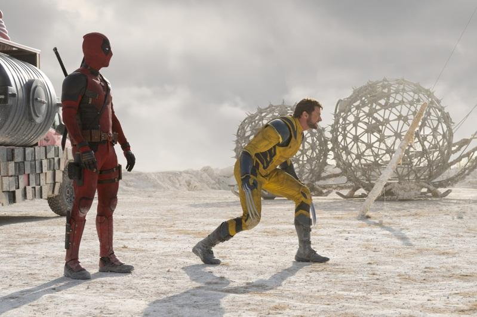

漫威最新电影「死侍与金钢狼」全球热卖，北美票房已破4亿美金，全球也即将突破9亿美金大关，全台也将突破2亿台币，就连当初为「死侍2」高歌的流行乐天后席琳狄翁也发文赞赏「嗨，蜘蛛人，恭喜你与阿狼的新电影」，祝贺票房持续破纪录。
席琳狄翁曾接受莱恩雷诺斯邀请为「死侍2」演唱歌曲「Ashes」，当时还由死侍亲自伴舞，并在最后说她唯一缺点就是唱得太好，高达110分，「我们不是『铁达尼号』，是『死侍』，唱到50分就好」，结果被席琳反呛「我就只能唱到110分，滚吧，蜘蛛人」，揶揄死侍与蜘蛛人的造型雷同，让死侍只能苦回「早知道就找超级男孩」，结果多年后席琳祝贺时，仍然举例「蜘蛛人」，相当幽默。
近期莱恩在Instagram也逐一点名感谢客串名单，包括查宁坦图、卫斯理史奈普、珍妮佛嘉纳以及达芙妮金，并都会刻意写下一大串文章表达对他们愿意力挺的感谢，不仅点名卫斯理史奈普才是近年漫威电影的开山始祖，也夸赞珍妮佛的状态一直保持很好，显现他一直对这些朋友愿意力挺非常感谢。
